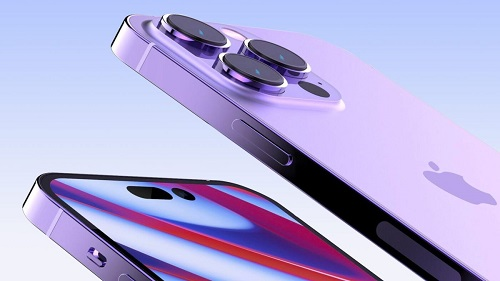

DigiNews
DigiNews
تمامی حقوق این سایت برای دیجی نیوز محفوظ است. نقل مطالب با ذکر منبع بلامانع است.
copy Right© 2022 DigiNews News Agancy, All rights reserved

سری آیفون ۱۴ احتمالاً با پشتیبانی از شارژ ۳۰ وات و در رنگ بنفش نیز عرضه میشوند
براساس شایعهای جدید، آیفون ۱۴ و آیفون ۱۴ پرو در رنگ بنفش نیز عرضه خواهند شد. این گوشیها احتمالاً در گزینههای ذخیرهسازی مشابه مدلهای سال قبل و با پشتیبانی از شارژ ۳۰ وات دردسترس قرار خواهند گرفت.
اپل کمتر از دو ماه دیگر آیفون ۱۴ و آیفون ۱۴ پرو را رونمایی خواهد کرد. اگرچه قبلاً تصاویر مختلفی از این دو مدل مشاهده کردهایم، یکی از افشاگران خبرهای فناوری، گزارشهای قبلی را تأیید و چند نکتهی دیگر دربارهی آیفونهای بعدی ارائه کرده است.
این افشاگر با نام کاربری Jioriku در توییتر، اطلاعاتی از رنگبندی و حالت جدید صفحهی همیشهروشن (Always On Display) سری آیفون ۱۴ بهاشتراک گذاشته است. تقریباً سال گذشته نیز وی بهدرستی پیشبینی کرد درحالیکه کاربر ماسک زده باشد، قفل آیفون ۱۳ میتواند فقط با بررسی چشم کاربر باز شود.
این افشاگر اکنون جزئیاتی دربارهی رنگبندی سری آيفون ۱۴ ارائه کرده است که براساس آن، آیفون ۱۴ استاندارد در رنگهای سبز، بنفش، آبی، مشکی، سفید و قرمز عرضه خواهد شد. منابع وی اعلام کردهاند مدل بنفش این گوشی جایگزین نسخهی صورتی آن خواهد شد. طبق اطلاعات Jioriku، آیفون ۱۴ پرو نیز در رنگهای سبز، بنفش، نقرهای، طلایی و گرافیتی عرضه خواهد شد که رنگ بنفش آن جایگزین آبی شده است.
9to5mac مینویسد Jioriku اولین کسی نیست که به مدل بنفش آیفون ۱۴ اشاره کرده است. یان زلبو نیز قبلاً رندری از ظاهر آیفون ۱۴ پرو در رنگ بنفش منتشر کرده بود که تصویر آن را درادامه مشاهده میکنید.
Jioriku توضیحاتی نیز دربارهی قابلیت Always On Display ارائه کرده است. او میگوید ویژگی صفحهی همیشهروشن روی سری آیفون ۱۴ فقط ابزارکهای صفحهی قفل را نشان میدهد و روشی برای تغییر آن وجود نخواهد داشت. این خبر با گزارشهایی مطابقت دارد که اخیراً دربارهی احتمال اضافهشدن این ویژگی به آیفون ۱۴ پرو منتشر شده است.
Jioriku اعلام کرده است اپل مدل تیتانیومی آیفون ۱۴ پرو را نیز آزمایش کرده؛ اما درنهایت کیفیتی مشابه آیفون ۱۳ پرو بهدست آورده است. این افشاگر ادعا میکند که گزینههای ذخیرهسازی آیفونهای بعدی اپل مشابه نسل کنونی این محصول خواهد بود. او افزود سری آیفون ۱۴ از شارژ سریع ۳۰ وات پشتیبانی خواهند کرد. علاوهبراین، گفته میشود آهنرباهای MagSafe در سری آیفون ۱۴ کمی قدرتمندتر و قاب باتری MagSafe جدید نیز بزرگتر و سنگینتر خواهد بود.
DigiNews
DigiNews
تمامی حقوق این سایت برای دیجی نیوز محفوظ است. نقل مطالب با ذکر منبع بلامانع است.
copy Right© 2022 DigiNews News Agancy, All rights reserved